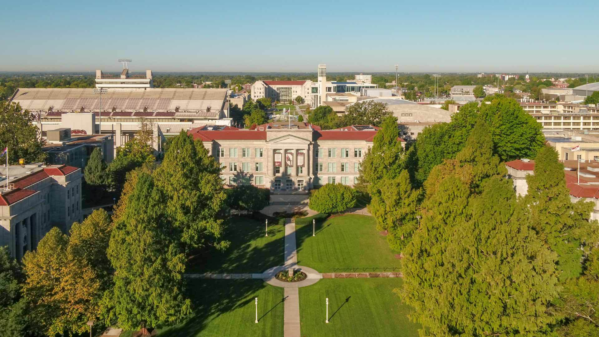

- 
Computer Science (CS) is the study of computers and computational systems. Computer scientists create systems that are correct, reliable, and efficient. Computing is a broad and rapidly-changing field that connects to and draws from many disciplines, including mathematics, electrical engineering, psychology, statistics, fine arts, linguistics, and physical and life sciences. Computer science students learn to integrate theory and practice, to recognize the importance of abstraction, and to appreciate the value of good engineering design. Coursework must prepare students for lifelong learning and must include professional practice, such as communication skills, teamwork, and ethics. (from ACM/IEEE Computer Science Curricula 2013) The department currently offers two track options which are the Computer Science-Computer Science (CS-CS) and Computer Science-Software Development (CS-SD).